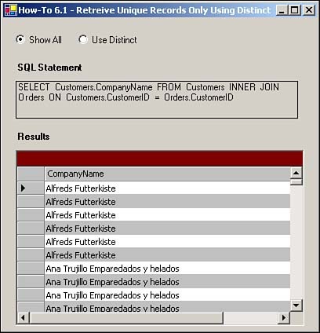
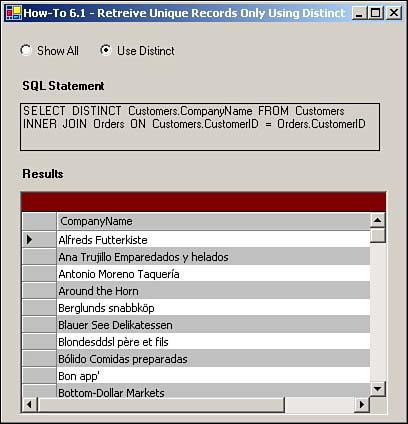

I need to figure out which customers have invoices. The problem is that when I join the Customers with the Orders tables, I get the customers listed for each order. I only want each customer listed once. How do I return only those customers who have orders, but only once?
For this How-To, you will be using the DISTINCT clause on a SQL SELECT statement to limit the data to unique values. When you include the DISTINCT clause, SQL Server uses the columns that are returned to determine how to limit the data.
For the opposite affect, you can include the ALL clause, although it is not necessary because this is the default. You will create two SELECT statements for this task. The first one is for all records:
SELECT Customers.CompanyName FROM Customers INNER JOIN Orders ON Customers .CustomerID =Orders.CustomerID
To limit the records, use the DISTINCT clause:
SELECT DISTINCT Customers.CompanyName FROM Customers INNER JOIN Orders ON Customers.CustomerID = Orders.CustomerID
Open and run the Visual Basic .NET-Chapter 6 solution. From the main form, click on the button with the caption How-To 6.1. When the form loads, you will see two option buttons, Show All and Distinct, with Show All selected. The SELECT statement showing an inner join between customers and order is displayed in a Label control. You will also see a DataGrid control filled with multiple entries of customers displayed (see Figure 6.1).

If you click on the option button labeled Use Distinct, then the DataGrid control will be refreshed, but only one customer per set of orders will be displayed.
Create a Windows Form. Then place the controls listed in Table 6.1 with the following properties set, as displayed in Figures 6.1 and 6.2.

|
Object |
Property |
Setting |
|---|---|---|
|
RadioButton |
Name |
rbShowAll |
|
Checked |
True |
|
|
RadioButton |
Name |
rbDistinct |
|
Label |
Text |
SQL Statement |
|
Label |
Name |
lblSQLString |
|
Label |
Text |
Results |
|
DataGrid |
Name |
dgResults |
As with some of the other chapters' projects, you need to build a support routine to create the Connection string. Called BuildCnnStr, the function can been seen in Listing 6.1. This function takes a server and database name passed to it and creates a connection string.
Function BuildCnnStr(ByVal strServer As String, _
ByVal strDatabase As String) As String
Dim strTemp As String
strTemp = "Provider=SQLOleDB; Data Source=" & strServer & ";"
strTemp &= "Initial Catalog=" & strDatabase & ";"
strTemp &= "Integrated Security=SSPI"
Return strTemp
End Function
Although you could create a routine that would pass back a Connection object, a more versatile method would be to pass back a string. The reason for this is that for some objects, you are asked only for a Connection object, but other objects want just a string.
Add the code in Listing 6.2 to the Load event of the form. (Double-click on the form to bring up the code.)
Private Sub frmHowTo6_1_Load(ByVal sender As System.Object,
ByVal e As System.EventArgs) Handles MyBase.Load
GenerateData(Me.rbDistinct.Checked)
End Sub
Add the code in Listing 6.3 to the class module of the page, creating the GenerateData routine. This routine creates the necessary SQL SELECT statement based on whether blnUseDistinct is true or false. If you look back at Listing 6.2, you will see that this is the value of option button rbDistinct. After the SQL string is created, it is assigned to lblSQLString to display the string, and then it is used in a data adapter to fill a dataset. Last, the SQL string is assigned as the data source for the data grid dgResults.
Sub GenerateData(ByVal blnUseDistinct As Boolean)
'-- Build the SQL String
Dim strSQL As String
strSQL = "SELECT "
If blnUseDistinct Then
strSQL += "DISTINCT "
End If
strSQL += "Customers.CompanyName FROM Customers "
strSQL += "INNER JOIN Orders ON Customers.CustomerID = Orders.CustomerID"
'-- Store the SQL String
Me.lblSQLString.Text = strSQL
'-- Use the SQL String to build the data adapter and fill the data table.
Dim odaResults As New OleDb.OleDbDataAdapter(Me.lblSQLString.Text, _
BuildCnnStr("(local)", "Northwind"))
Dim dtResults As New DataTable()
odaResults.Fill(dtResults)
'-- Assign the data table to the data grid's DataSource property
Me.dgResults.DataSource = dtResults
End Sub
Add the code in Listing 5.4 to the CheckChanged event of the rbDistinct Radio Button control.
Private Sub rbDistinct_CheckedChanged(ByVal sender As System.Object, _
ByVal e As System.EventArgs) Handles rbDistinct.CheckedChanged
GenerateData(Me.rbDistinct.Checked)
End Sub
Tip
You might have noticed that besides the loading of the form, I only call the GenerateData routine when the rbDistinct option button is changed, and not when the rbShowAll option button is changed. Because only two buttons are available, you only have to program one of the control's events. If you put it on both, you will have the routine called twice, which is not a good thing in this case. |
It is hard to believe that just one word can affect the data that a SQL statement returns. For the most part, you will want to see all of the records that a SELECT statement returns, but it is nice to have the DISTINCT clause when you need to limit the data.